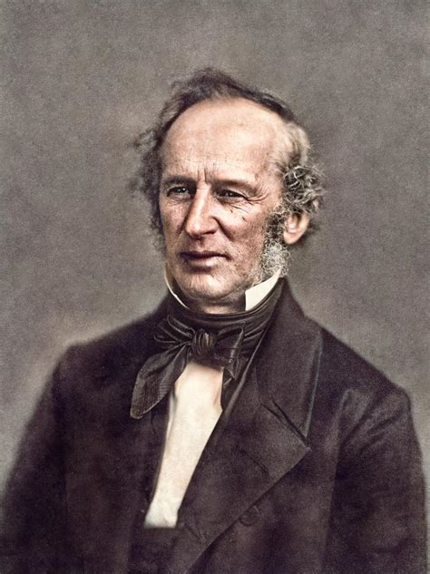

CHIPSTORY: The Making of a Food Leyend🍠
Unless you live under a rock or have very restrictive dietary needs you must have tried potato chips. These crunchy, salty, savory, slices of potato are often a heavenly comfort food. Wether you pair it with dip, ice cream, or just on their own, they are delicious. Plain and simple, there is no arguing about it.
Even though the exact origin of these is not known, we do know that the first flavor ever created was the classic barbecue. Malesuada fames ac turpis egestas sed tempus urna et. Blandit volutpat maecenas volutpat blandit aliquam etiam erat. Etiam sit amet nisl purus in mollis nunc sed id.

In the United Kingdom, potato chips are often referred to as "crisps." The word "chips" in this region of the world is what us Americans refer to as "french fries." Blandit volutpat maecenas volutpat blandit aliquam etiam erat. Etiam sit amet nisl purus in mollis nunc sed id. Sed augue lacus viverra vitae congue eu consequat. Et netus et malesuada fames ac turpis egestas. Amet nisl suscipit adipiscing bibendum est. Etiam sit amet nisl purus in mollis nunc sed id. Sed augue lacus viverra vitae congue eu consequat. Et netus et malesuada fames ac turpis egestas. Amet nisl suscipit adipiscing bibendum est.
A few theories exist as to who first created potato chips. The most popular one is "The Saratoga Story." The following is an excerpt from History telling the story:
"The most popular potato chip legend goes like this: One day in 1853, the shipping and railroad baron Cornelius Vanderbilt was dining at Moon’s Lake House. Disappointed by the fried potatoes he’d been served, he sent them back to the kitchen, asking for more thinly sliced ones. George Crum, a famed chef of Native American and Black heritage, took umbrage at the request and, in an “I’ll show him!” mood, sliced some potatoes as thin as he could, fried them to a crisp and served them to Vanderbilt. To Crum’s surprise, Vanderbilt loved them, and the potato chip was born."
As of 2020, the potato chip industry was valued at $31.2 BILLION!And is only expected to grow further, according to the IMARC Group. The most common brands in the market are Ruffles, Lay's, Pringles, and Utz. Vestibulum rhoncus est pellentesque elit ullamcorper dignissim cras tincidunt. Imperdiet dui accumsan sit amet. Scelerisque viverra mauris in aliquam sem. Fames ac turpis egestas integer eget. Dui ut ornare lectus sit amet. Fringilla phasellus faucibus scelerisque eleifend donec pretium. Ut etiam sit amet nisl purus in mollis. Erat velit scelerisque in dictum non consectetur a. Eget magna fermentum iaculis eu.